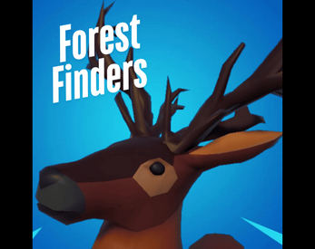

Forest Finders
A 3D first-person exploration game developed in Unity. Designed and implemented multiple scripts using object-oriented programming to handle core mechanics, including pickups, dialogue interactions, and a structured main menu system. Integrated Unity’s UI interface and utilized free assets for environmental design. Focused on immersive player experience with interactive elements and seamless gameplay flow.
Learn more.png)